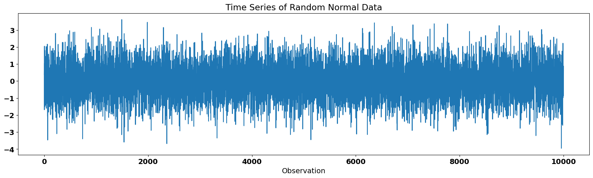
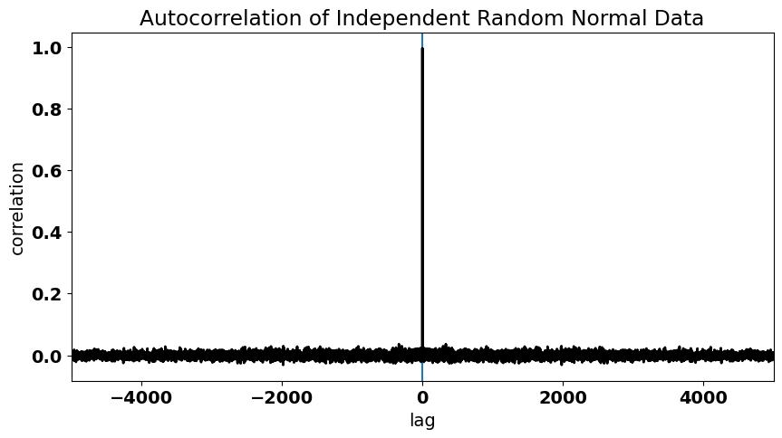
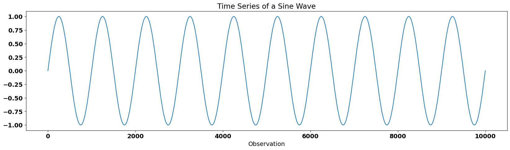
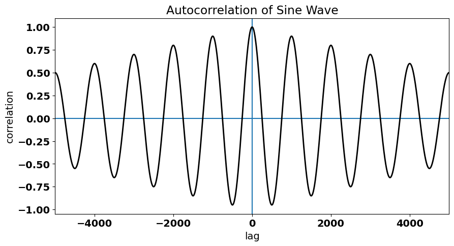
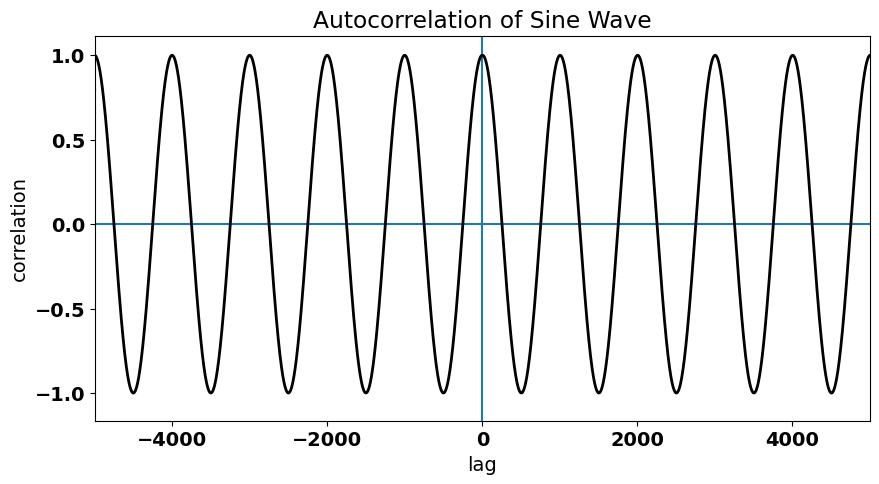
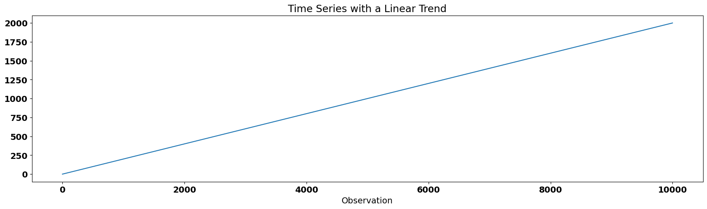
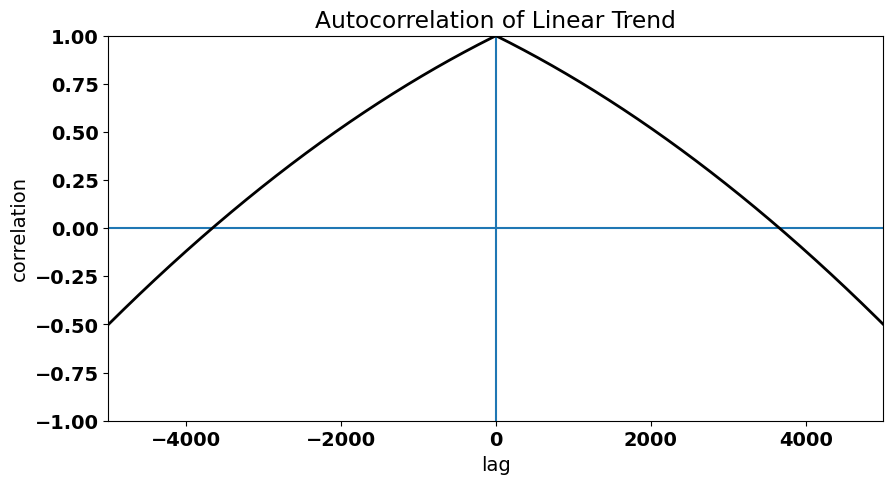

Autocorrelation#
Previously, we discussed the assumptions of linear regression, a key assumption being that the residuals have no autocorrelation, i.e. the residuals are independent. The autocorrelation in the residuals stems from autocorrelation in one or more of our time series. Sometimes, however, we still want to examine these time series even though the condition of independent residuals is violated and methods to account for the autocorrelation have been developed.
Autocorrelation describes the dependence of or relationship between data within a time series on data within that same time series at a different point in time. Autocorrelation means that the data points within our time series are not independent.
In the next section, we will explore how to account for autocorrelation in our residuals, but first we will define what we mean by autocorrelation. We will start with the autocovariance function (ACF).
The autocovariance function (\(\gamma(t)\)) is the covariance of a time series with itself at another time, as measured by a time lag (or lead) \(\tau\). For a time series \(x(t)\), it is defined as:
where \(t_1\) and \(t_N\) are the starting and end points of the time series, respectively, and the prime denotes departures from the time mean.
It often helps to understand what’s going on in the above equation if we write out what this expression looks like for a certain value of \(\tau\). Let’s look at \(\tau\) = 1 assuming \(t_1\) = 0 and \(t_N\) = \(N\):
What about \(\tau\) = 2?
And \(\tau\) = \(N\)-1?
For \(\tau\) = 0, the autocovariance is \(\gamma\)(0) = \(\overline{x^{\prime2}}\) = variance.
Autocorrelation, \(\rho\)(\(\tau\)), is simply \(\frac{\gamma(\tau)}{\gamma(0)}\) , i.e. the autocovariance divided by the variance.
Key Characteristics of Autocovariance/Autocorrelation:#
\(\gamma\) is symmetric about \(\tau\) = 0
-1 \(\leq \rho \leq\) 1
\(\rho\)(0) = 1
if \(x(t)\) is not periodic, then \(\rho\)(\(\tau\)) -> 0 as \(\tau\) -> \(\infty\)
Let’s create some synthetic time series to investigate the ACF of different types of time series.
First, let’s generate some random normal data. We should get an autocorrelation function that looks similar to what we saw for the residuals of our ENSO-California precipitation regression model.
# generate time series of independent random normal data (N = 10000)
import numpy as np
x = np.random.randn(10000)
The time series looks like this:
# plot the time series of random data
from matplotlib import pyplot as plt
import matplotlib as mpl
mpl.rc('font',size=14,weight='bold') #set default font size and weight for plots
plt.figure(figsize=(20,5))
plt.plot(x)
plt.xlabel("Observation")
plt.title("Time Series of Random Normal Data")
plt.show()

A few notes on the np.correlate() function…#
We can calculate the autocorrelation function using the np.correlate() function. This function uses an algorithm that computes the autocovariance (but does not include the \(\frac{1}{(t_N - \tau) - t_1}\) factor), not the autocorrelation, so we have to make some adjustments to convert to autocorrelation. In addition, we use the function argument 'same' to allow for more overlap between the two time series. Where the time series do not overlap, the arrays are “padded” with zeros, such that the \(\frac{1}{(t_N - \tau) - t_1}\) factor is always equal to \(\frac{1}{N}\). The zero-padding builds in a taper towards zero at larger lags. The size of the output array will be the “same” size as the input arrays (see the following documentation for more information).
… Back to our example#
Thus, in order to get the autocorrelation, we simply divide by \(N\), because we are using random data drawn from a standard normal distribution, i.e. \(\sigma\) = 1.
# calculate the autocorrelation of x
acorr = np.correlate(x,x/len(x),'same')
To visualize the autocorrelation function, we plot it as a function of lag, \(\tau\).
# plot the autocorrelation as a function of lag
fig = plt.figure(figsize=(10,5))
# define a variable for lag
t = np.arange(0,len(x),1)
lag = [i-len(t)/2 for i in t]
# plot acorr
plt.axhline(0)
plt.axvline(0)
plt.plot(lag,acorr,'k',linewidth=2,label='resids')
plt.xlim(-5000,5000)
plt.xlabel("lag")
plt.ylabel("correlation")
plt.title("Autocorrelation of Independent Random Normal Data")
Text(0.5, 1.0, 'Autocorrelation of Independent Random Normal Data')

Let’s consider something different: the time series of a sine wave. This time series has a fixed periodicity. What do you think the autocorrelation function for a sine wave looks like?
# generate sine wave
x1 = np.linspace(-10*np.pi,10*np.pi,10000)
y1 = np.sin(x1)
# plot the time series of sine wave
plt.figure(figsize=(20,5))
plt.plot(y1)
plt.xlabel("Observation")
plt.title("Time Series of a Sine Wave")
plt.show()

We will use the same function to calculate the autocorrelation function, but this time we also need to divide by the variance of the sine wave to convert to autocorrelation.
# calculate the autocorrelation of sine wave, y1
acorr1 = np.correlate(y1/np.std(y1),y1/(np.std(y1)*len(y1)),'same')
# plot the autocorrelation as a function of lag
fig = plt.figure(figsize=(10,5))
# define a variable for lag
t = np.arange(0,len(y1),1)
lag = [i-len(t)/2 for i in t]
# plot acorr
plt.axhline(0)
plt.axvline(0)
plt.plot(lag,acorr1,'k',linewidth=2,label='resids')
plt.xlim(-5000,5000)
plt.xlabel("lag")
plt.ylabel("correlation")
plt.title("Autocorrelation of Sine Wave")
Text(0.5, 1.0, 'Autocorrelation of Sine Wave')

We can clearly see the periodicity in the autocorrelation function.
But, notice how this autocorrelation tapers towards zero. For a perfect sine wave, this should not be the case and is simply a consequence of the nature of the np.correlate() function. Let’s undo the tapering in the np.correlate() function to check that the true ACF of a sine wave.
We will define the following function:
def autocorr(x, twosided=False, tapered=True):
"""
Return (lags, ac), where ac is the estimated autocorrelation
function for x, at the full set of possible lags.
If twosided is True, all lags will be included;
otherwise (default), only non-negative lags will be included.
If tapered is True (default), the linearly
tapered to zero for large lags estimate, is returned.
"""
nx = len(x)
xdm = x - x.mean()
acf = np.correlate(xdm, xdm, mode='full') # we need to use the "full" mode to untaper
acf /= acf[nx - 1]
lags = np.arange(-nx + 1, nx)
if not tapered: # undo the built-in taper
taper = 1 - np.abs(lags) / float(nx)
acf /= taper
if twosided:
return lags, acf
else:
return lags[nx-1:], acf[nx-1:] # returns two variables, lags and the ACF
Now, let’s plug our sine wave data into this function:
acorr1 = autocorr(y1,twosided=True,tapered=False)
# plot the autocorrelation as a function of lag
fig = plt.figure(figsize=(10,5))
# define a variable for lag
t = np.arange(0,len(acorr1[0]),1)
lag = [i-len(acorr1[0])/2 for i in t]
# plot acorr
plt.axhline(0)
plt.axvline(0)
plt.plot(acorr1[0],acorr1[1],'k',linewidth=2,label='resids')
plt.xlim(-5000,5000)
plt.xlabel("lag")
plt.ylabel("correlation")
plt.title("Autocorrelation of Sine Wave")
Text(0.5, 1.0, 'Autocorrelation of Sine Wave')

Finally, let’s take a look at the autocorrelation function of a time series with a linear trend. The linear trend in the data implies dependence between adjacent data points.
# generate time series of a linear trend
x2 = np.linspace(0,1000,10000)
y2 = 2*x2
# plot the time series of a linear trend
plt.figure(figsize=(20,5))
plt.plot(y2)
plt.xlabel("Observation")
plt.title("Time Series with a Linear Trend")
plt.show()

This time we need to adjust the input to our np.correlate() function even more. The function assumes that the data already has the mean removed. In the previous two examples, the mean was zero, so we did not have to worry about subtracting the mean. In this case the mean is non-zero, so we need to subtract the mean.
# calculate the autocorrelation of y2
acorr2 = autocorr(y2,twosided=True,tapered=False)
# plot the autocorrelation as a function of lag
fig = plt.figure(figsize=(10,5))
# plot acorr
plt.axhline(0)
plt.axvline(0)
plt.plot(acorr2[0],acorr2[1],'k',linewidth=2,label='resids')
plt.xlim(-5000,5000)
plt.ylim(-1,1)
plt.xlabel("lag")
plt.ylabel("correlation")
plt.title("Autocorrelation of Linear Trend")
Text(0.5, 1.0, 'Autocorrelation of Linear Trend')

The trend in the time series is evident in large autocorrelation values at non-zero lags (i.e., data points in the time series are not independent) and the gradual decay of the autocorrelation function as \(\tau\) increases.
Now, that we are familiar with the concept of autocorrelation, we will explore how to account for autocorrelation in time series in the next section.